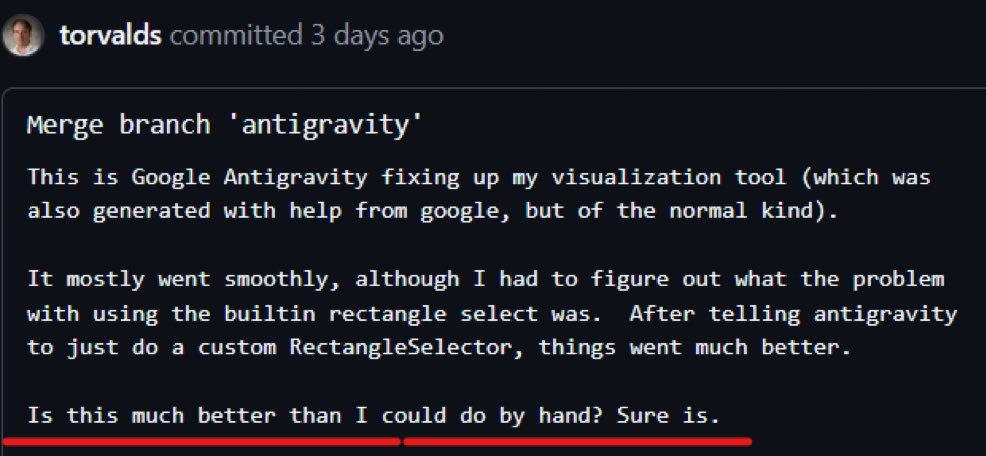

A Timeline of Interesting Takes on Agentic AI Use in Software Engineering
I'm keeping this post up to date with interesting takes on AI use in a software engineering context, as I find them. Sentiment on the date that I started this post seems to be changing from generally dismissive with spots of over optimistic promises of 'Vibe Coding' utopia, to a rational acceptance of a significant net positive when used with a human in the loop by competent software engineers.
I think the progression and keen observations from prominent engineers is interesting to watch, so this is my record of that:
How I Use Claude Code (Separation of Implementation and Planning by Boris Tane)
Post: https://boristane.com/blog/how-i-use-claude-code/
HN: https://news.ycombinator.com/item?id=47106686
This is the flow I've found myself working towards. Essentially maintaining more and more layered documentation for the LLM produces better and more consistent results. What is great here is the emphasis on the use of such documents in the planning phase. I'm feeling much more motivated to write solid documentation recently, because I know someone (the LLM) is actually going to read it! I've noticed my efforts and skill acquisition have moved sharply from app developer towards DevOps and architecture / management, but I think I'll always be grateful for the application engineering experience that I think the next wave of devs might miss out on.
I've also noted such a huge gulf between some developers describing 'prompting things into existence' and the approach described in this article. Both types seem to report success, though my experience is that the latter seems more realistic, and much more likely to produce robust code that's likely to be maintainable for long term or project critical goals.
Stop Thinking of AI as a Coworker. It's an Exoskeleton. | Kasava
https://www.kasava.dev/blog/ai-as-exoskeleton
This post by Ben Gregory, linked on Hacker News makes the case that agentic AI should be thought of something that augments, not replaces humans and so should be thought of like an exoskeleton.
I think this is true, though using agentic AI effectively takes more learning than existing physical exoskeletons that simply make movements you know stronger.
Andrej Karpathy's Notes on Agentic AI Use
(January 2026)
https://xcancel.com/karpathy/status/2015883857489522876
Based on my personal experience, this is a both an insightful and realistic take on the use of agentic AI in software engineering workflows as of January 2026, and so is worth repeating verbatim:
Coding workflow. Given the latest lift in LLM coding capability, like many others I rapidly went from about 80% manual+autocomplete coding and 20% agents in November to 80% agent coding and 20% edits+touchups in December. i.e. I really am mostly programming in English now, a bit sheepishly telling the LLM what code to write... in words. It hurts the ego a bit but the power to operate over software in large "code actions" is just too net useful, especially once you adapt to it, configure it, learn to use it, and wrap your head around what it can and cannot do. This is easily the biggest change to my basic coding workflow in ~2 decades of programming and it happened over the course of a few weeks. I'd expect something similar to be happening to well into double digit percent of engineers out there, while the awareness of it in the general population feels well into low single digit percent.
IDEs/agent swarms/fallability. Both the "no need for IDE anymore" hype and the "agent swarm" hype is imo too much for right now. The models definitely still make mistakes and if you have any code you actually care about I would watch them like a hawk, in a nice large IDE on the side. The mistakes have changed a lot - they are not simple syntax errors anymore, they are subtle conceptual errors that a slightly sloppy, hasty junior dev might do. The most common category is that the models make wrong assumptions on your behalf and just run along with them without checking. They also don't manage their confusion, they don't seek clarifications, they don't surface inconsistencies, they don't present tradeoffs, they don't push back when they should, and they are still a little too sycophantic. Things get better in plan mode, but there is some need for a lightweight inline plan mode. They also really like to overcomplicate code and APIs, they bloat abstractions, they don't clean up dead code after themselves, etc. They will implement an inefficient, bloated, brittle construction over 1000 lines of code and it's up to you to be like "umm couldn't you just do this instead?" and they will be like "of course!" and immediately cut it down to 100 lines. They still sometimes change/remove comments and code they don't like or don't sufficiently understand as side effects, even if it is orthogonal to the task at hand. All of this happens despite a few simple attempts to fix it via instructions in CLAUDE . md. Despite all these issues, it is still a net huge improvement and it's very difficult to imagine going back to manual coding. TLDR everyone has their developing flow, my current is a small few CC sessions on the left in ghostty windows/tabs and an IDE on the right for viewing the code + manual edits.
Tenacity. It's so interesting to watch an agent relentlessly work at something. They never get tired, they never get demoralized, they just keep going and trying things where a person would have given up long ago to fight another day. It's a "feel the AGI" moment to watch it struggle with something for a long time just to come out victorious 30 minutes later. You realize that stamina is a core bottleneck to work and that with LLMs in hand it has been dramatically increased.
Speedups. It's not clear how to measure the "speedup" of LLM assistance. Certainly I feel net way faster at what I was going to do, but the main effect is that I do a lot more than I was going to do because 1) I can code up all kinds of things that just wouldn't have been worth coding before and 2) I can approach code that I couldn't work on before because of knowledge/skill issue. So certainly it's speedup, but it's possibly a lot more an expansion.
Leverage. LLMs are exceptionally good at looping until they meet specific goals and this is where most of the "feel the AGI" magic is to be found. Don't tell it what to do, give it success criteria and watch it go. Get it to write tests first and then pass them. Put it in the loop with a browser MCP. Write the naive algorithm that is very likely correct first, then ask it to optimize it while preserving correctness. Change your approach from imperative to declarative to get the agents looping longer and gain leverage.
Fun. I didn't anticipate that with agents programming feels more fun because a lot of the fill in the blanks drudgery is removed and what remains is the creative part. I also feel less blocked/stuck (which is not fun) and I experience a lot more courage because there's almost always a way to work hand in hand with it to make some positive progress. I have seen the opposite sentiment from other people too; LLM coding will split up engineers based on those who primarily liked coding and those who primarily liked building.
Atrophy. I've already noticed that I am slowly starting to atrophy my ability to write code manually. Generation (writing code) and discrimination (reading code) are different capabilities in the brain. Largely due to all the little mostly syntactic details involved in programming, you can review code just fine even if you struggle to write it.
Slopacolypse. I am bracing for 2026 as the year of the slopacolypse across all of github, substack, arxiv, X/instagram, and generally all digital media. We're also going to see a lot more AI hype productivity theater (is that even possible?), on the side of actual, real improvements.
Questions. A few of the questions on my mind:
- What happens to the "10X engineer" - the ratio of productivity between the mean and the max engineer? It's quite possible that this grows a lot.
- Armed with LLMs, do generalists increasingly outperform specialists? LLMs are a lot better at fill in the blanks (the micro) than grand strategy (the macro).
- What does LLM coding feel like in the future? Is it like playing StarCraft? Playing Factorio? Playing music?
- How much of society is bottlenecked by digital knowledge work?
TLDR Where does this leave us? LLM agent capabilities (Claude & Codex especially) have crossed some kind of threshold of coherence around December 2025 and caused a phase shift in software engineering and closely related. The intelligence part suddenly feels quite a bit ahead of all the rest of it - integrations (tools, knowledge), the necessity for new organizational workflows, processes, diffusion more generally. 2026 is going to be a high energy year as the industry metabolizes the new capability.
Engineers are Starting to Comment That Agentic AI Helps Their Thinking
(22nd January 2026)
https://philipotoole.com/why-talking-to-llms-has-improved-my-thinking/
This helped me to realise that AI helps me to think through problems as though I had an always-at-hand colleage with very broad knowledge to "Rubber Duck" problems with.
I agree with the authors observations here. I think rather than it being purely language related, there's a link to the practice of 'rubber ducking', where when you start to explain your problem to someone else it forces you to step through the problem as you start to explain the context, the steps you've tried and where you're stuck. I think LLMs can be that other person for us sometimes, except that other person has a great broad range of expertise.
https://news.ycombinator.com/item?id=46728197#46729565
Linus Torvalds is Vibe Coding
(January 2026)
The creator of the Linux kernel, Linus Torvalds, appears to be embracing vibe coding.
https://github.com/torvalds/AudioNoise/blob/main/README.md
Also note that the python visualizer tool has been basically written by vibe-coding. I know more about analog filters -- and that's not saying much -- than I do about python. It started out as my typical "google and do the monkey-see-monkey-do" kind of programming, but then I cut out the middle-man -- me -- and just used Google Antigravity to do the audio sample visualizer.
https://x.com/rauchg/status/2010411457880772924

Why LLMs and AI Agents Won't Remove the Need for Software Engineers.
(By me 31st January 2025, almost 1 year ago)
Here I make comparisons between agentic AI and 'low code' solutions. I think many of my observations regarding the limitations of agentic AI stand, though I would say that the problems are much less prevalent in the leading models when used together with their harnesses from their creators (e.g. Claude Opus 4.5 with Claude Code and GPT 5.2 with Codex).
https://substack.com/home/post/p-156156135
AI is a Horse
(By Kevin Conner 2nd August 2024)
https://kconner.com/2024/08/02/ai-is-a-horse.html
To quote this post by Kevin Conner (I only read this recently), I think this captures the use of Agentic AI really well, even to today.
AI is a horse
It is faster than your feet depending on the terrain
It is way slower and less reliable than a train but can go more places
It eats a lot
You cannot simply tell it to go to the store for you
You have to tell it where to turn even if it might guess right sometimes
You have to keep it on the road even if it usually stays on the road
You can only lead it to water, you cannot make it drink
A good one runs at the shadow of the whip
We are skeptical of those that talk